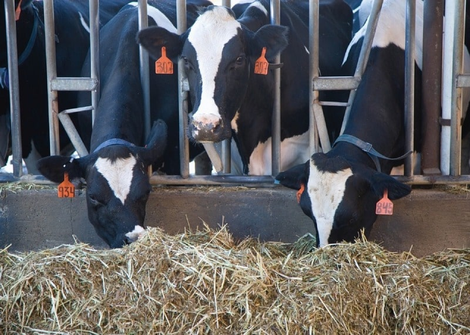

THE PRESSURE ON DAIRY FARMS AT A GLOBAL LEVEL HAS NEVER BEEN HIGHER:
...For the first time, GEA will showcase the autonomous feeding robot GEA DairyFeed 4500 with state-of-the-art sensor technology. GEA will also present a new solution for environmentally friendly manure management in ...cooperation with the Norwegian agri-tech company N2 Applied. It can reduce a farm's total GHG emissions by up to 30%. For conventional milking, GEA is also announcing innovations at EuroTier: The DairyRotor T8600 rotary milking parlor will be the first conventional GEA milking system with digital networking across systems. This is enabled by the new generation of GEA DairyMilk M6750 milking control units. These are connected to the herd management system GEA DairyNet and offer comprehensive digital services. GEA AutoDry, a new function that automatically dries lactating cows, will also be available for conventional milking systems.
...Increasing feed costs combined with less predictable weather patterns is one of the biggest challenges dairy farms are facing today. Added to this is the enormous amount of work involved in providing the right feed mix to several animal groups at the same time and in a targeted manner for optimum animal welfare and productivity. Based on almost 35 years of feeding expertise, GEA designed the new GEA DairyFeed F4500, which drives completely autonomously and also uses innovative sensor technology to reduce feed waste to a minimum. This saves time, money, and natural resources. The feeding robot runs purely on electricity and can be recharged in an ...environmentally friendly way using renewable energies. No major reconstruction on the farm is needed.
The robot is ...linked to the GEA DairyNet herd management system and can be conveniently monitored and controlled from ...mobile devices in real time. Besides giving farms maximum flexibility in their work processes, it also makes the job ...of a farmer more attractive, with a better work-life balance. The GEA DairyFeed F4500 will be available in the fourth quarter of this year, initially in Germany, Austria, Switzerland, France and Sweden, with global rollout to follow successively in 2023.
|  | |
Colostrum |
Feed Management in |
*Colostrum feeding is essential for the transfer of passive immunity |
|